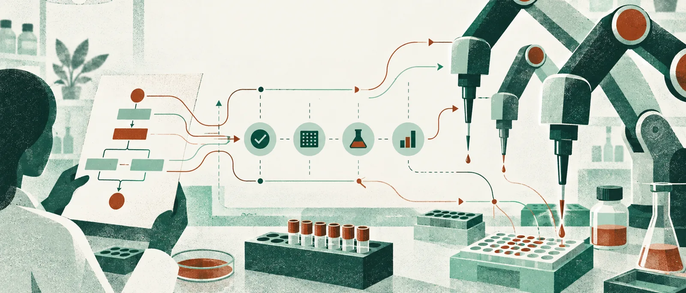

AI 인사이트 · 주제 글
실험 계획이 로봇의 동작이 되기까지, 확인할 일이 남습니다
실험 절차를 정확한 문장으로 작성해도 로봇이 바로 수행할 수 있는 것은 아닙니다. 장비가 이해하는 명령으로 바꾸고, 명령이 실행 가능한지 확인하고, 실제로 일어난 변화까지 관찰해야 합니다. 2025년 연구 「BioMARS」는 문헌에서 얻은 계획이 물리적인 작업으로 이어지는 이 접점을 여러 역할로 나누었습니다. 언어모델 하나가 모든 일을 해냈다는 요약보다 역할 사이의 연결을 보는 편이 유용합니다.
1. 계획은 장비에 전달할 내용이 됩니다
Biologist 역할은 생물학적 실험의 계획을 다룹니다. Technician은 그 계획을 로봇이 사용할 명령으로 번역합니다. 연구는 생성된 명령을 별도로 검사하는 단계도 둡니다. 자연어로 그럴듯한 절차와 장비에서 유효한 명령은 조건이 다르기 때문입니다. 계획의 뜻을 유지하면서 실행 규격에 맞추는 과정 자체가 평가할 대상입니다.
2. 실행된 뒤에는 다시 관찰합니다
Inspector는 시각적인 감시를 담당합니다. 문제가 생기면 멈추거나 알리는 동작이 포함됩니다. 명령을 전송했다는 사실만으로 실험이 계획대로 진행됐다고 가정하지 않으려는 구성입니다. 다만 시각처리의 일부 박스는 사람이 보정했습니다. 비표준 조건과 실시간 돌발 판단에는 제약이 있어 중요한 단계에서 사람의 감독이 가끔 필요했습니다. 관찰과 중단을 시스템의 일부로 만든 점을 보되, 모든 상황을 스스로 복구했다고 확대하지 않아야 합니다.
3. 무엇을 검증했는지 나누어 봅니다
절차 생성에는 70개 질문, 명령 번역에는 300개 단계가 사용됐습니다. 실제 배양 비교는 세 종류의 세포를 대상으로 했고, 최적화는 기존 데이터에 기반한 별도 평가였습니다. 서로 다른 평가를 한 숫자로 더해 수백 번의 완전 자율 생물학 실험을 성공했다고 표현하면 검증 대상이 바뀝니다. 계획의 품질과 명령 번역, 실제 배양 결과는 각각 확인해야 할 층입니다.
실제 배양 비교에서는 48시간 뒤 대사활성에 수작업과 유의한 차이가 없었습니다. 일부 세포종에서는 반복 사이의 변동이 더 작았습니다. 이는 시험한 조건에서 비교할 만한 결과를 얻었다는 근거입니다. 모든 세포 상태와 모든 장기 결과가 동등하다는 증명은 아닙니다. 유의한 차이를 발견하지 못한 결과를 완전한 동등성으로 바꾸어서도 안 됩니다.
시간 절감의 대상은 특히 중요합니다. 약 60분과 5~8분으로 비교한 것은 사람이 직접 손을 쓰는 hands-on time입니다. 세포가 자라거나 반응을 기다리는 생물학적 시간 전체가 그만큼 짧아졌다는 뜻은 아닙니다. 반복 작업에서 사람의 개입 시간을 줄이는 것도 충분히 가치 있는 목표입니다. 무엇의 시간을 줄였는지 정확히 말해야 실험실에서 기대할 효과를 계산할 수 있습니다.
최적화 결과에는 다른 경계가 있습니다. 세포분화 조건의 탐색은 공개된 기존 데이터와 최근접 이웃 보간에 기반했습니다. 제안한 모든 조건을 새로 로봇 실험으로 수행해 검증한 결과가 아닙니다. 데이터가 있는 조건 사이에서 가능성을 추정하는 단계와 실제로 새로운 결과를 측정하는 단계는 구분됩니다. 어느 단계까지 자동화했는지 표시해야 발견의 근거도 분명해집니다.
이런 연결 문제는 BioMARS에서 처음 등장한 것이 아닙니다. 2023년 「Autonomous chemical research with large language models」의 Coscientist도 검색, 문서, 코드, 실험 모듈을 연결했습니다. BioMARS가 실제로 인용하는 선행 맥락입니다. 분야와 구체적인 장비가 달라도 언어로 세운 계획을 실행 수단과 관측으로 연결해야 한다는 질문이 이어집니다. 여러 모듈을 묶은 시스템의 성과를 언어모델 단독의 능력으로 돌리지 않는 것이 중요합니다.
실험 자동화를 검토한다면 사람 개입을 숨겨진 예외로 처리하기보다 어디서 왜 필요했는지 기록하고 싶습니다. 명령 검사에서 멈춘 것인지, 영상의 해석을 보정한 것인지, 예외적인 현장 판단이 필요했는지에 따라 다음 개선이 달라집니다. 사람이 드는 시간과 결과의 변동, 오류를 발견하는 시점도 함께 보면 어느 연결이 실제로 안정됐는지 알 수 있을 것입니다. 이것은 연구 설계를 바탕으로 한 평가 제안입니다.
BioMARS의 유용한 성과는 실험실의 모든 책임을 한 번에 AI에게 넘겼다는 선언에 있지 않습니다. 계획을 번역하고 실행을 확인하는 작업을 나누어, 각각을 시험할 수 있게 만든 데 있습니다. 로봇이 오래 움직였다는 사실보다 무슨 조건으로 움직였고 어떤 관찰로 확인했는지가 더 중요합니다. 연구자의 손이 덜 필요한 실험과 검증이 덜 필요한 실험은 서로 다른 이야기입니다.
더 살펴볼 기술 정보
- 주자료는 BioMARS v1(2025년 7월 2일)입니다. AIDB 소개는 7월 3일입니다.
- 역할은 계획 Biologist, 명령번역 Technician, 시각감시 Inspector입니다. 생성 명령의 별도 검사와 이상 시 중단·알림이 포함됩니다.
- 평가를 구분했습니다: 절차생성 70질문, 명령번역 300단계, 실제 배양 세 세포종, 기존 자료에 기반한 최적화입니다.
- 48시간 뒤 대사활성의 비유의 차이는 모든 생물학적 결과의 동등성 증명이 아닙니다. 일부 세포종의 반복 간 변동 감소도 조건을 붙여 해석했습니다.
- 약 60분 대 5~8분은 사람이 직접 작업한 시간입니다. 전체 생물학적 실험 기간이나 배양 시간이 아닙니다.
- 분화 최적화는 공개 데이터와 최근접 이웃 보간에 기반하며 모든 제안 조건을 신규 로봇 실험으로 검증하지 않았습니다. 구체적인 배양 레시피나 실험 실행 안내는 이 글의 범위에 포함하지 않았습니다.
1차 자료
- BioMARS: A Multi-Agent Robotic System for Autonomous Biological Experiments, v1: §2.1–2.6, §3, §4.1
AIDB에서 발견한 글
편집장 코멘트
가상 편집장 문해준: 계획이 명령이 되고 실행 뒤 관찰로 이어지는 구조를 독자가 따라갈 수 있습니다. 손작업이 줄어든 성과와 여전히 필요한 확인을 같은 화면에 놓은 글입니다.